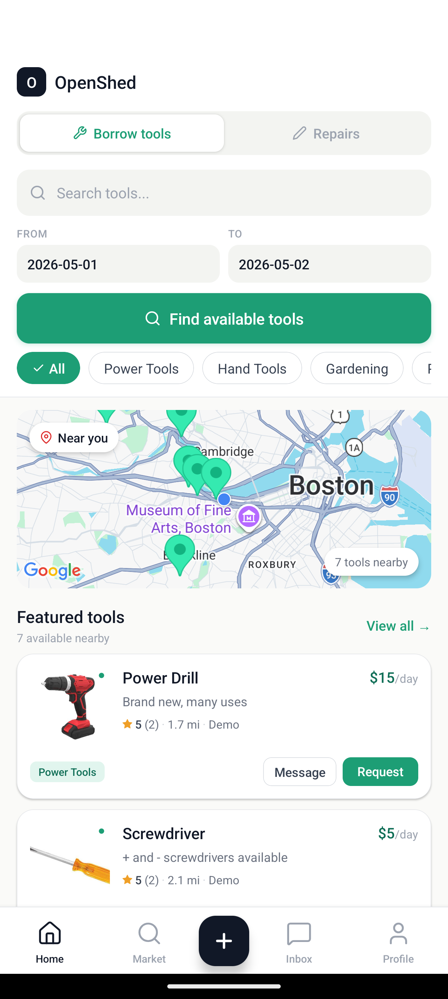
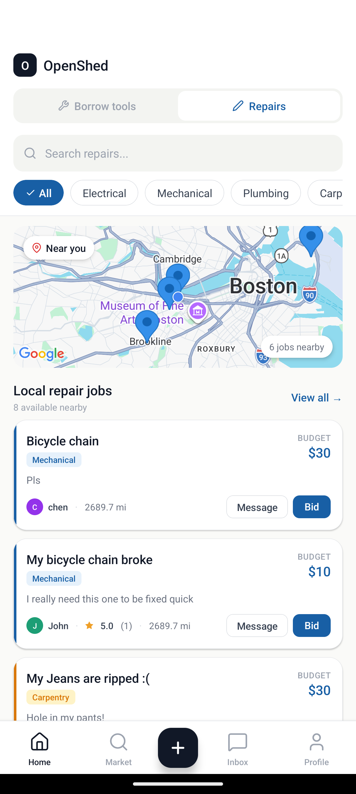

OpenShed
Jan 2026 – May 2026
A community marketplace that helps neighbors borrow tools and connect over repair jobs instead of buying more or throwing things away. Built for iOS and Android, OpenShed brings nearby tools and repair opportunities onto a map, with messaging and peer reviews to help people coordinate and build trust.
My contributions
- Collaborated with a team to build the mobile marketplace and its Spring Boot backend.
- Designed persistent messaging with participant-based authorization, inbox and chat DTOs, REST endpoints, and user blocking.
- Built transaction-gated ratings and reviews across borrowing and repair workflows, including eligibility checks, aggregation, profile summaries, and mobile submission flows.

